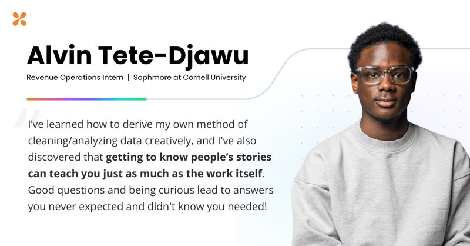

Work and Impact
Results first, then how I got there.
I work on products, operations, and strategy, and across every role on this page I do the same thing, which is find where something is stuck, build a simple plan to fix it, and measure whether it worked. I started in my family's food business, and since then I've worked in consulting, revenue operations, and athletics operations, so here's each one, with the result first.
- 8xrevenue growth at Pinch of Africa, $7K to $56K
- 70+event bookings, up from 17
- 294net-new accounts surfaced at OpenSesame
- 50+students mentored at a time
Experience
Pinch of Africa is my mom's Black-owned catering business, and I worked across it, from cleaning and customer service to orders, seasonal promotions, and growth. During the school year we serve in a community college dining hall, and in the summer we vend at festivals, where I grill kebabs and chicken.
I scaled the business from $7K to $56K in revenue, an 8x increase over four years, by redesigning our pricing, product operations, and the customer experience. I chose which products and events to grow, then led go-to-market for 5 SKUs across 10+ states and owned the shipping and logistics.
Event bookings grew from 17 to 70+, a 4x increase, once I expanded our catering capacity and tracked leads, scheduling, and follow-ups in a CRM. I also built an Excel cost-tracking and inventory model that standardized our operations and gave us consistent KPI reports.
- Pricing strategy
- Go-to-market
- Product operations
- CRM
- KPI reporting
- Excel modeling
I interviewed client stakeholders and then presented transportation and data platform recommendations to Fortune 50 executives. I researched U.S., Canadian, and EU markets and wrote 20+ pages of policy, legal, and strategy analysis to support their decisions, and I defined requirements and proof-of-concept frameworks for customs clearance and predictive analytics, which shaped the product strategy.
On my second project, I built a content calendar and brand voice guidelines for a new Ithaca restaurant that is now rolling out its digital presence on social media. I also run recruiting, outreach, and interviews to find its interns, and I present research to the owner that backs our process improvements.
- Management consulting
- Stakeholder interviews
- Requirements definition
- Proof of concept
- Product strategy
- Executive presentation
I built a Salesforce account-matching model on 6,500+ records that surfaced 72 corrections and 294 net-new accounts for the pipeline. I unified 10,000+ Salesforce and S&P Capital IQ records into an e-commerce segmentation framework using AI-assisted workflows, and I analyzed 1,400+ deals with 36 histograms and 72 lead-to-opportunity conversion benchmarks to find where the funnel was stuck.
I then presented a lifecycle strategy for a 386,000-record lead backlog, with conversion, deletion, and monitoring rules that RevOps adopted.

- Revenue operations
- Salesforce
- Funnel analysis
- Account matching
- Segmentation
- AI-assisted workflows
I coordinate apparel and uniform logistics and scheduling for nine varsity programs and deliver gear to 1,000+ athletes on time. I manage and track an 800-item equipment inventory and restock it three times a week to keep practices and the fitness center running, and I work with coaches and staff to handle gear requests and delivery timing.
- Logistics
- Inventory management
- Scheduling
- Stakeholder management
Projects
I mentor 50+ students at a time through group webinars and 20+ one-on-one sessions, and I design the curriculum and lesson slides for our financial literacy and career sessions, in person and virtual, across the U.S. and Africa.
I advise first-generation, low-income families on college applications and scholarships, and every September I sit down with seniors to work through their financial aid forms. I collect student feedback and track attendance to refine each session.
- Mentoring
- Curriculum design
- Financial literacy
- College access
- Feedback collection
I coded the base of this site, then iterated with prompt engineering to direct AI tools in refining its front-end design. I reviewed the AI-suggested changes, debugged and edited the code, and deployed the live site using GitHub version control.
The site is plain HTML, CSS, and JavaScript with no frameworks. It works on a phone and a wide screen, it respects reduced motion settings, and it still reads fine with JavaScript turned off.
- HTML
- CSS
- JavaScript
- Front-end design
- Prompt engineering
- GitHub
Earlier roles
Show Mosakowski, Upward Bound, Masterman's, and Kohl's
I turned data from New England schools into governance recommendations for K-12 education policy reform as a policy research intern at Clark University's Mosakowski Institute for Public Enterprise. I found that resources were being misallocated across FGLI neighborhoods, and that schools with poor websites had less published research about them and most couldn't afford to fix their sites, so the gap kept feeding itself.
That kind of systemic problem is what I want to spend my career solving. During the internship, I also met young Black professionals visiting from Chicago.
- Policy research
- Data analysis
- Education policy
Upward Bound is a college access program for first-generation and low-income students, and I stayed with it through the end of high school. I earned the Senior Scholar Award, the Financial Literacy Award, and two summer program completion awards, and the financial literacy lessons stuck with me enough that I now teach them to other students.
- College access
- Financial literacy
- Leadership
I was a business intern at Masterman's, a family-owned safety and industrial supply company, where I did door-to-door sales and outreach as part of the team. I was mentored by business professionals and learned that you only get a yes if you're willing to knock.
- Sales
- Outreach
- Customer service
I joined Kohl's as a seasonal sales associate in the shoe and apparel department and stayed on part-time after the holidays. I turned browsers into repeat customers by starting conversations early, and I lined up floor coverage, inventory, and visual merchandising with each promotion to help the store hit its KPI targets.
In March 2024, I was named Employee of the Month for reliability and the revenue I brought in, and I'm honored to be the second youngest person in the store's history to earn it. The paychecks also gave me the freedom to start investing, which is where my interest in financial literacy took off.
- Sales
- Visual merchandising
- KPI targets
Education
I'm a candidate for a B.S. in Applied Economics and Management with a Business Analytics concentration, and a B.S. in Information Science with a Data Science concentration. I'm the first person in my family to attend college.
- Managerial Economics
- Game Theory
- Cost Analysis
- Statistics and Data Science
- Computing in Python
- Web Design and Programming
- Marketing
- Management Communication
- Finance
I took eight AP courses, captained the basketball team, and led the Black Student Union for two years. I came to Worcester Academy from Nativity School of Worcester on an academic scholarship.
Skills
Product and strategy
- Product Strategy
- Go-to-Market
- Requirements
- Prioritization
- KPIs and Metrics
- Market Research
- Funnel Analysis
- Business Analysis
- Technology Research
- Process Improvement
- Project Management
- Stakeholder Management
- Cross-functional Collaboration
- Executive Presentation
- Curriculum Design
Technical
- Excel Modeling
- Salesforce (CRM)
- S&P Capital IQ
- Data Analysis
- Data Visualization
- Generative AI and LLM Tools (ChatGPT, Claude, Gemini)
- Prompt Engineering
- GitHub (Version Control)
- Python (Beginner)
- HTML/CSS/JS
- Front-End Design
- Google Workspace
- Notion
- Canva
- DaVinci Resolve
People
- Mentoring
- Storytelling
- Public Speaking
- Written Communication
- Event Planning
- Nonprofit Development
Languages
- English (Native)
- Twi (Intermediate)
- Spanish (Intermediate)
Learning next
- SQL
- Tableau
- Figma
Licenses and Certifications
Outside of work and class, I like picking up new skills on my own, and here are the licenses and certifications I have so far.
- Lean Six Sigma White Belt (Process Management International)
- Bloomberg Market Concepts (Bloomberg for Education)
- Bloomberg Finance Fundamentals (Bloomberg for Education)
- IBM Data Fundamentals (IBM SkillsBuild)
- Oliver Wyman First-Year Immersion Program
- Ethical AI: Building Trust and Transparency in the Workplace (OpenSesame)
- CyberEssentials: Principles of Cybersecurity (OpenSesame)
- Canva Essentials (Canva Design School)
I'm now working toward the Claude Certified Architect Foundations credential and the Pinterest Media Planner Certification.
Beyond the Work
Work is only part of the picture, because outside of jobs and class I mentor students, play drums, and make films, and those things have taught me as much as any role on this page.
See Community and Creativity